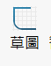
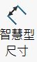
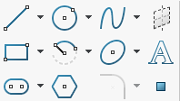
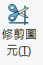
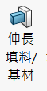
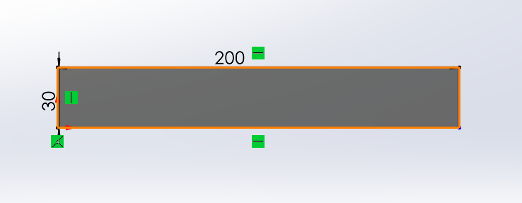
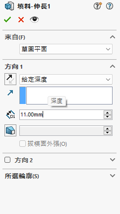

Ch6_Case Study Design of Steel Ball Balancing Platform <<
Previous Next >> Ch6-2
Ch6-1
1D 系統架構
我們專題使用solidwork 2023進行繪圖
SOLIDWORKS是一款用於設計各種產品和零件。 模擬和分析： 提供模擬和分析工具，用於測試設計的性能、耐久性和材料屬性。 製造和加工： 支援數控機床編程和工具路徑生成，提高製造效率。 綜合性： 提供組件建模、裝配設計、繪圖生成、動態模擬、流體動力學模擬等多個功能。
預計會使用的功能有
基準面: 設計過程用來繪製草圖與特徵的參考平面

草圖:繪製圖形的基礎

智慧型尺寸:為所繪製的草圖賦予尺寸大小

線條及形狀:繪製草圖形狀及線條的工具

修剪圖元:修剪繪圖時多餘的長度及圖形

伸長填料:在草圖輪廓上擠出一個草圖特徵

伸長除料: 在一個實體模型上用來移除掉多餘材料
插入零件組:插入一個零件或次組合件到主合件中
結合:零組件間產生幾何關係使其可旋轉或線性移動
第一版本鋼球平衡台的platform軌道長度為200mm整體的寬度為30mm 並給定深度填料11mm

Ch6_Case Study Design of Steel Ball Balancing Platform <<
Previous Next >> Ch6-2